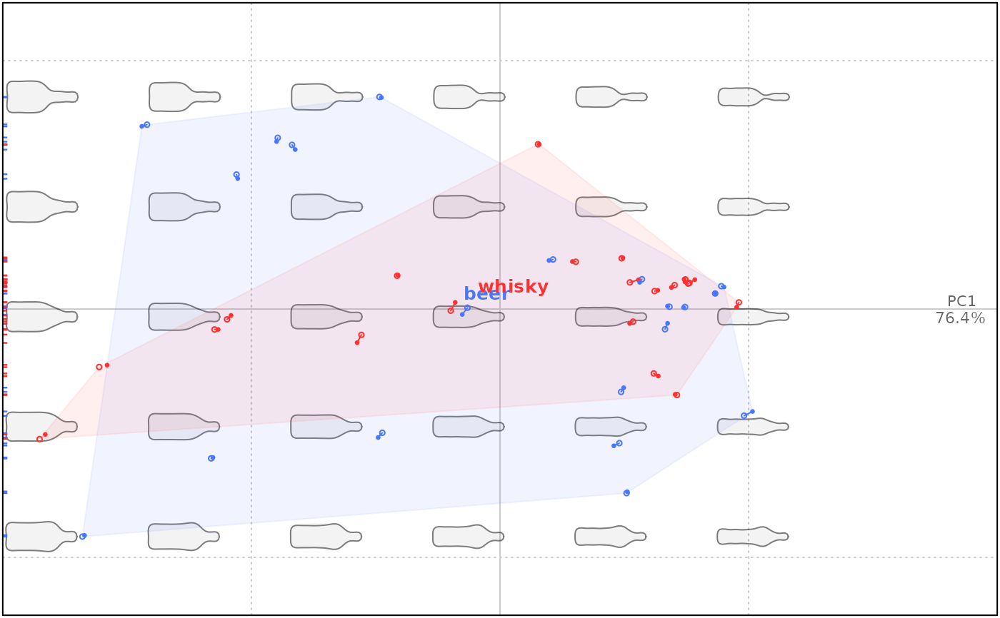

If you have paired individuals, i.e. before and after a treatment or for repeated measures,
and if you have coded coded it into $fac, this methods allows you to retrieve the corresponding PC/LD scores,
or coefficients for Coe objects.
Value
a list with components x1 all coefficients/scores corresponding to the
first level of the fac provided; x2 same thing for the second level;
fac the corresponding fac.
Examples
bot2 <- bot1 <- coo_scale(coo_center(coo_sample(bot, 60)))
bot1$fac$session <- factor(rep("session1", 40))
# we simulate an measurement error
bot2 <- coo_jitter(bot1, amount=0.01)
bot2$fac$session <- factor(rep("session2", 40))
botc <- combine(bot1, bot2)
botcf <- efourier(botc, 12)
#> 'norm=TRUE' is used and this may be troublesome. See ?efourier #Details
# we gonna plot the PCA with the two measurement sessions and the two types
botcp <- PCA(botcf)
plot(botcp, "type", col=col_summer(2), pch=rep(c(1, 20), each=40), eigen=FALSE)
#> will be deprecated soon, see ?plot_PCA
bot.pairs <- get_pairs(botcp, fac = "session", range=1:2)
segments(bot.pairs$session1[, 1], bot.pairs$session1[, 2],
bot.pairs$session2[, 1], bot.pairs$session2[, 2],
col=col_summer(2)[bot.pairs$fac$type])
